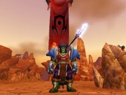

Les Terres de Kirin Tor
Valragh
Points : 0

Joué par :
[ Information masquée ]
Age : 25
Lieu de naisance : inconnu
Sexe : Homme
Race : Orc
Faction : Horde
Formation : Guerrier
Niveau : 49
Guilde :
Artisanat 1 : Forgeron
Artisanat 2 : Mineur
Envoyer un MP
Description : Orphelin de la Horde, il suivi, dès son plus jeune age,une formation particulière avec un maître d'arme.
Cinquième Ère [1]
Lune de la Force [1]
Décade du Panda [1]
La vie d'un Orphelin de la Horde
Alors que Valragh passait rendre visite aux ravissantes Sumi et Tumi, la directrice de l’orphelinat Battlewail, agitant les bras, l’appelât si fort que toute la capitale due l’entendre.
-VALRAGH ! Ohé ! J’n’y crois pas !
Viens donc par là un moment.
Les p’tits vont êtres contents de voir un enfant de la horde qui vient leur raconter son histoire !
Avant même d’avoir pu dire quelque chose, il se retrouva poster sur une chaise, devant des mômes qui le regardaient avec impatience.
Heu…Hum…Bon !
Alors voila…
Je suis un orphelin de guerre, comme beaucoup, j’ai passé mes premières années dans c’t’orphelinat.
Vers mes 5 ans, un grand Orc est passé ici. Il recherchait des p’tiots à former.
Nous étions neuf, les « plus costauds » qu’il disait.
Nous sommes partis avec lui pour un long voyage. Je n’saurais dire où nous sommes passés, j’étais trop occupé à sauver mes fesses !
Tout c’que j’me rappelles, c’est que vers le deux/troisième jour, le p’tit Gurk, un camarade, et mort en tombant dans un nid de scorpides.
L’orc, notre maître, nous a dit :
-Hé bin voila ! Maintenant, vous savez que les scorpides, ça pique !
Un peu plus tard, deux autres sont morts de faim.
Puis trois autres, alors qu’on traversai la rivière, se sont fais chopés par des crocolisques.
On croisa ensuite la route de quelques hyènes Japecroc…Un n’a pas survécu.
Le second est mort quelques jours plus tard à la suite de ses blessures.
Il ne restait que moi…Mon maître m’expliqua alors que c’était « la loi du plus fort »(et aussi du plus chanceux).
Après plusieurs années à ses cotés, on commençait à s’connaître, et à s’apprécier.
Je le considérais comme mon père adoptif.
Il m’avoua que j’étais de loin son meilleur élève.
En fait, j’ai appris un peu plus tard, que sur tout ceux qu’il a pris à l’orphelinat, je suis le seul qui a survécut…
Nous avons vadrouillés, de Durotar aux Tarides. Il m’enseigna les arts du combat, et même l’écriture.
Il disait toujours :
-Pour faire un bon guerrier, morveux, il faut du muscle, de la technique, mais aussi de l’esprit.
La tête peut parfois servir autant qu’les bras !
Bien sur, je n’ai pas l’niveau d’un érudit mais…J’me débrouille.
Mon maître était fantastique. Il avait une poigne de colosse !
Il avait perdu une main lors d’une bataille lointaine…Il se battait contre je n’sais quel ennemi, lors qu’il fut enchaîné à un roc. Il avait réussi à s’extirper mais sa main droite restait prisonnière. Ne pouvant se permettre de perde trop de temps, ses compagnons étant en infériorité, il saisit sa gigantesque hache de sa main gauche, et d’un coup net, tranchât son autre main. Oubliant la douleur, il reparti dans la bataille, dans un état de transe furieuse due à la perte de sang sans doute.
Il était puissant, mais pas immortel.
Son age était d'jà pas mal avancé quand il m’a pris sous son aile.
Il m’avoua être heureux d’avoir pu former un élève avant d'mourir.
Nous sommes revenu en Durotar, pour un ultime voyage –je n’le savais pas, mais lui, si- faisant un détour par le village Troll de Sen’jin, il avait quelques amis là-bas.
Nous avons pris la direction de Tranchecolline, un endroit qu’il appréciait.
Nous arrivions en vue d’Orgrimmar.
Mon maître s’arrêta un moment, inspira fortement, et me dit :
-Ah ! Voila un endroit magnifique. Sens-tu cet air chaud et sec ?
Il n’y a qu’ici qu’on peut l’trouver !
-Tu sais Valragh -c’est la première fois qu’il m’appelait par mon prénom- Notre race est la plus grande qui existe en ce monde !
Nous avons réussis à reprendre au destin, quelque chose de puissant, notre liberté.
C’est ce qui fait notre force.
Nos ancêtres se sont sacrifiés pour ça, ne l’oublie jamais !
Quand tu combattras, fais le pour eux, et non pour toi.
C’est là, que tu sentiras la puissance, la rage au combat.
Il se mit à rire, comme pour casser le sérieux de la situation…
-Mouahaha ! Allez p’tit gars, en route ! L’auberge nous attend.
A sa mort, je l’ai ramené dans ce coin qu’il aimait. Il est ensevelit avec son équipement, en fier guerrier qu’il était, devant la porte de la capitale.
D’ici, son esprit veillera à jamais sur notre cité.
Mon histoire est liée à celle de ce grand combattant.
Sans lui, je n’serais pas là !
Chaque jour, j’essaye de lui faire honneur.
Alors, les p’tiots, si j’ai un truc à vous dire, c’est de respecter les anciens. Honorez la mémoire des combattants morts et soyez fiers de votre race !
La directrice reprit :
-Merci mon grand. Voyez les enfants, être orphelin n’est pas une fatalité.
N’oubliez pas ça en grandissant…Maintenant, allez jouer !
-Hum…Valragh, j’aimerais bien qu’tu passes plus souvent…
-Heu oui oui…J’avais pas trop l’temps là mais…A la prochaine !
Sur ces mots, il s’éclipsa rapidement, évitant ainsi la corvée d’un repas, ou autre séance de jeu avec les niards…
Décade du Gorille
Décade de l'Ours
Lune d'Agilité
Décade du Tigre
Décade du Singe
Décade du Faucon
Lune de l'Esprit
Décade de la Chouette
Décade de la Baleine
Décade du Lapin